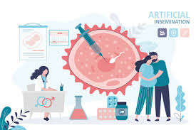
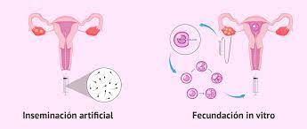

| Inducción de ovulación |
Consiste en administrar medicamento en bajas dosis a la mujer para lograr el crecimiento de uno o dos óvulos. Una vez logrado el tamaño adecuado, se genera la ovulación y se le indica a la pareja los días más favorables para tener relaciones sexuales (coito programado) y conseguir el embarazo. |
| Inseminación Artificial |
Es la introducción de una muestra de semen en el interior de la cavidad uterina en el momento de la ovulación. Para aumentar las posibilidades de embarazo, se realiza una leve estimulación ovárica para mejorar o incitar el crecimiento de los óvulos.La muestra de semen se mantiene en el laboratorio para su introducción en el momento justo de la ovulación. Dicha muestra puede ser del cónyuge o de un donante. |
| Fecundación In Vitro |
Es una técnica que consiste en estimular el ovario con medicación con el fin de obtener óvulos maduros, los cuales se aspiran vía vaginal mientras la paciente está en sedación.Los óvulos obtenidos son fecundados en el laboratorio y se dejan en un incubador durante 5 días para su evolución y desarrollo.Los embriones que cuentan con características aptas se implantan en el útero con el objetivo de conseguir un embarazo 11 días después. |
| Vitrificación de Ovocitos |
Es la técnica de Congelación de Óvulos actualmente más utilizada en Reproducción Asistida. Se realiza en aquellas mujeres que desean retrasar la edad del primer embarazo o en quienes por enfermedad (Cáncer) desean congelar sus óvulos antes de que sean dañados por la Quimioterapia o Radioterapia. | 
| Criopreservación de Embriones |
Es una técnica que permite preservar mediante congelación (vitrificación) los embriones excedentes de un ciclo de Fecundación In Vitro para su uso posterior. |
|  |
SON DOS FORMAS DE REPRODUCCION DE ASISTIDA |